1Bir bakışta
Outlet Demo çalışan bir tasarım demosudur: mağaza gezilir, panel kullanılır; gerçek sipariş ve ödeme alınmaz. Ürünler ve fiyatlar gerçek katalogdan gelir.
2Müşteriyi nerede kaybederiz, ne yaptık?
| Aşama | Kaybetme nedeni | Demoda |
|---|---|---|
| İlk 5 saniye | Ne satıldığı anlaşılmıyor | Tek sayfalık ilk ekran, 10 kategori, arama üstte |
| Arama | 45 bin üründe aradığını bulamıyor | Yazarken öneri, yazım toleransı, boş sonuçta çıkış yolu |
| Liste | Çok ürün, daraltamıyor | Kategori, fiyat, marka ve stok filtreleri |
| Liste | Geri tuşu filtreyi sıfırlıyor | Filtre adres çubuğunda; bağlantı paylaşılır |
| Ürün | Karar veremiyor, alternatif yok | Yakın fiyatlı benzer ürünler |
| Ürün | Fotoğraf ürünü göstermiyor (kutu, logo) | Görsel denetimi ve yönetici onay kuyruğu |
| Sepet | Kargo ücreti sürprizi | Ücretsiz kargo çubuğu ve farkı kapatan ürün önerisi |
| Sepet | Sepeti bırakıp gidiyor | Sepet saklanır; hatırlatma kuralı (simülasyon) |
| Sonrası | Tek seferlik müşteri | Sarf ürünleri için yeniden sipariş hatırlatması (simülasyon) |
| Yönetim | Değişiklik için geliştirici gerekiyor | Ürün, içerik ve kampanya panelden; her değişiklik geri alınır |
3Mağaza, ekran ekran
Mağaza arayüzü Almancadır. Ekran görüntüleri tanıtım videosundan alınmıştır.
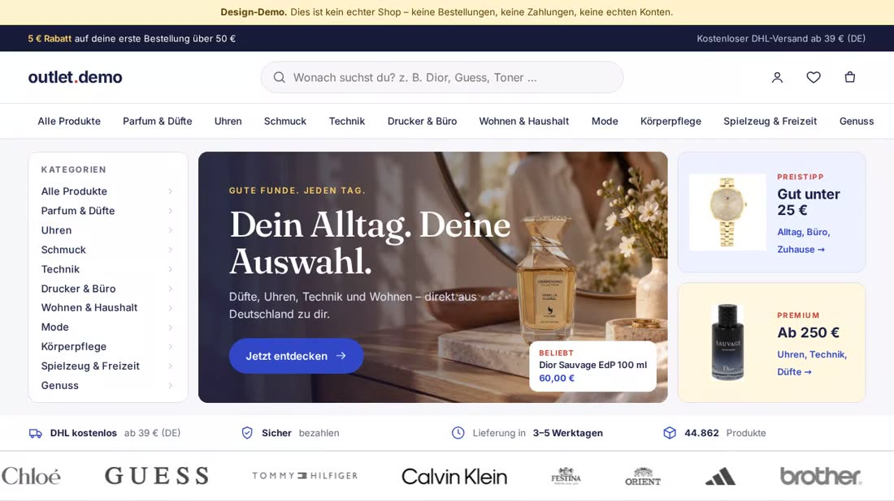
Tek sayfalık ilk ekran
- Solda kategori listesi, ortada büyük görsel ve öne çıkan ürün
- Altında güven şeridi ve marka bandı; ekran boyuna göre tam bir sayfaya oturur
- Kaydırınca doğrudan filtreli katalog gelir
Yanıt verdiği sorun: ne satıldığı ilk beş saniyede anlaşılmalı.
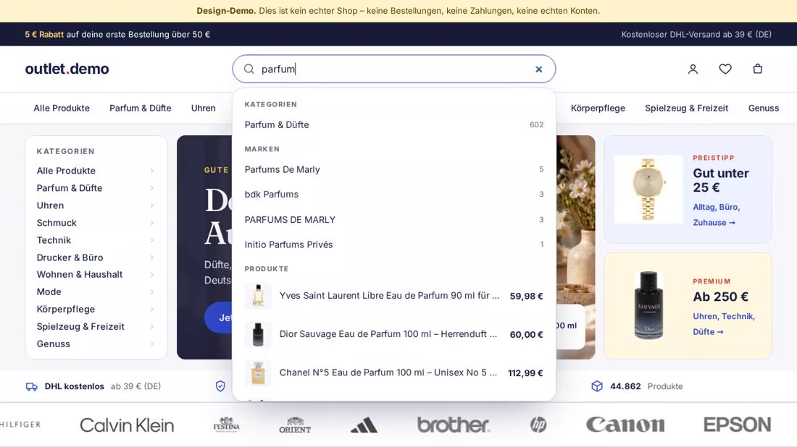
Yazarken öneren arama
- Kategori, marka ve ürün önerileri aynı kutuda
- Yazım toleransı: "g-shock" ile "G Shock" aynı sonucu verir
- / tuşu aramayı açar, ok tuşlarıyla gezilir
Yanıt verdiği sorun: 45 bin üründe aradığını bulamamak.

Filtreli katalog
- Kategori, alt kategori, fiyat, marka ve stok filtreleri birlikte çalışır
- Seçili filtreler üstte etiket olarak durur, tek tıkla kalkar
- Filtre ve arama adres çubuğunda saklanır; bağlantı paylaşılabilir, geri tuşu çalışır
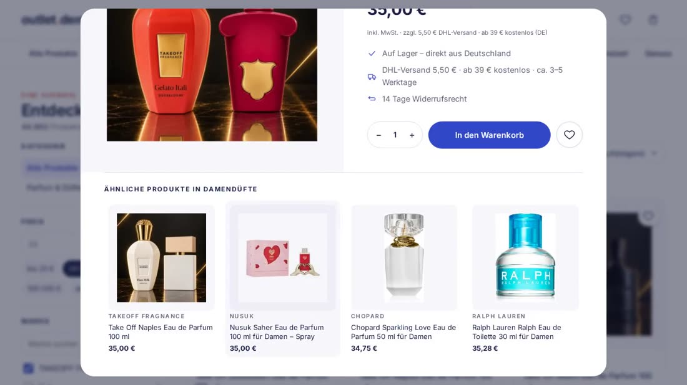
Ürün sayfası ve benzer ürünler
- Fiyat, stok, kargo süresi ve 14 günlük cayma hakkı bir arada
- Aynı alt kategoriden, yakın fiyatlı benzer ürünler
Yanıt verdiği sorun: müşteri karar veremeyince alternatif görmeden çıkıyor.
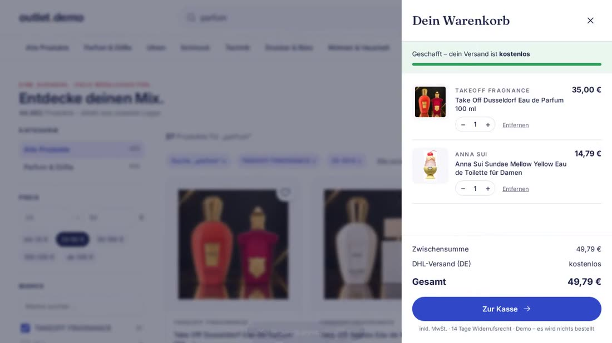
Sepet ve ücretsiz kargo çubuğu
- Ücretsiz kargoya kalan tutarı gösterir; eşik geçilince yeşile döner
- Aradaki farkı kapatan gerçek ürünler önerir
- Sepet tarayıcıda saklanır, dönünce yerinde durur
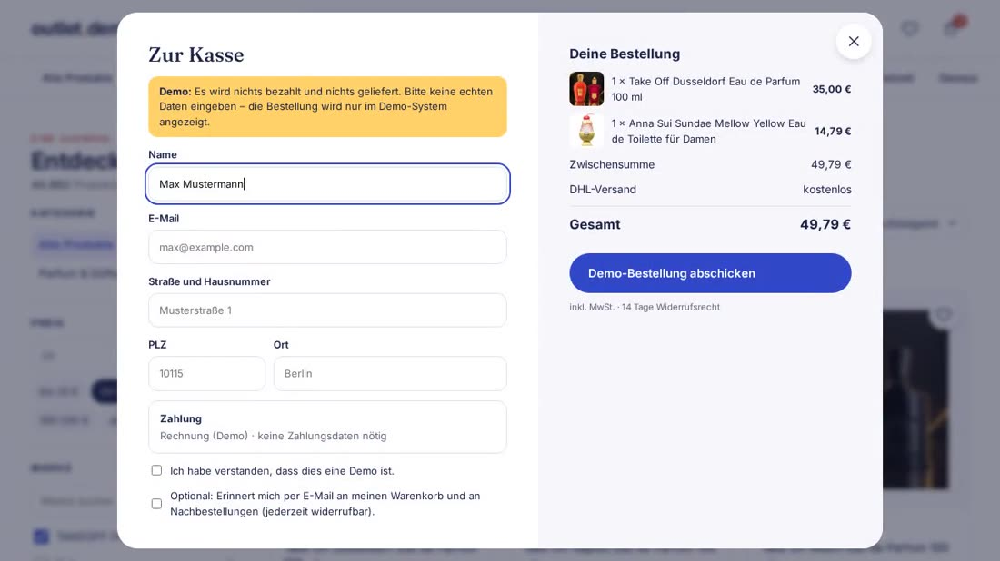
Kasa adımı (demo)
- Yalnız bir deneme siparişi oluşturur; form bunu açıkça yazar
- Ödeme alınmaz, hiçbir şey gönderilmez
Gerçek ödeme (kart, PayPal, Klarna) henüz yok.
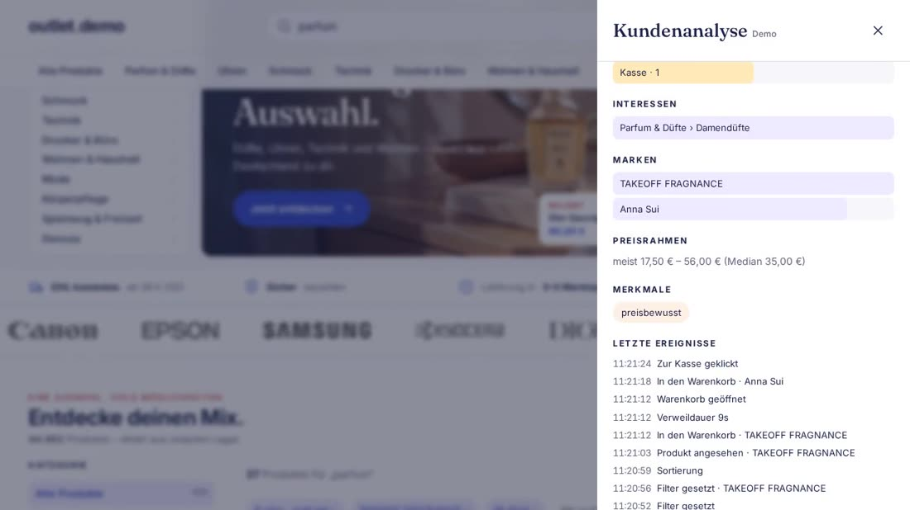
Müşteri analizi
- Ziyaretçinin izniyle davranışı izler: görüntüleme, arama, favori, sepet
- İlgi alanı, marka, fiyat aralığı ve satın alma aşaması çıkarır
- "Für dich" önerileri bu profilden gelir; ziyaretçi verisini silebilir
İzin verilmezse analiz kapalı kalır. Sahte geri sayım, uydurma stok baskısı gibi yöntemler bilerek kullanılmadı.
4Yönetim paneli, ekran ekran
Panel Türkçedir ve şifreyle açılır. Ekran görüntüleri kullanım videosundan, yerel deneme verisiyle alınmıştır.
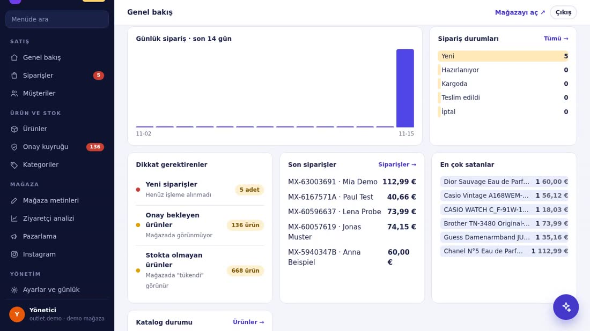
Genel bakış
- Siparişler, ciro ve dikkat isteyen işler tek ekranda
- Onay bekleyen ve stokta olmayan ürün sayıları
- Her kutu ilgili listeye götürür
Ekrandaki siparişler deneme verisidir.

Ürün arama ve düzenleme
- 45 bin üründe ada, markaya, kategoriye ve duruma göre arama
- Başlık, fiyat, görsel ve kategori panelden değiştirilir; mağazaya hemen yansır
- "Öne çıkar" ile ana sayfa seçkisi belirlenir
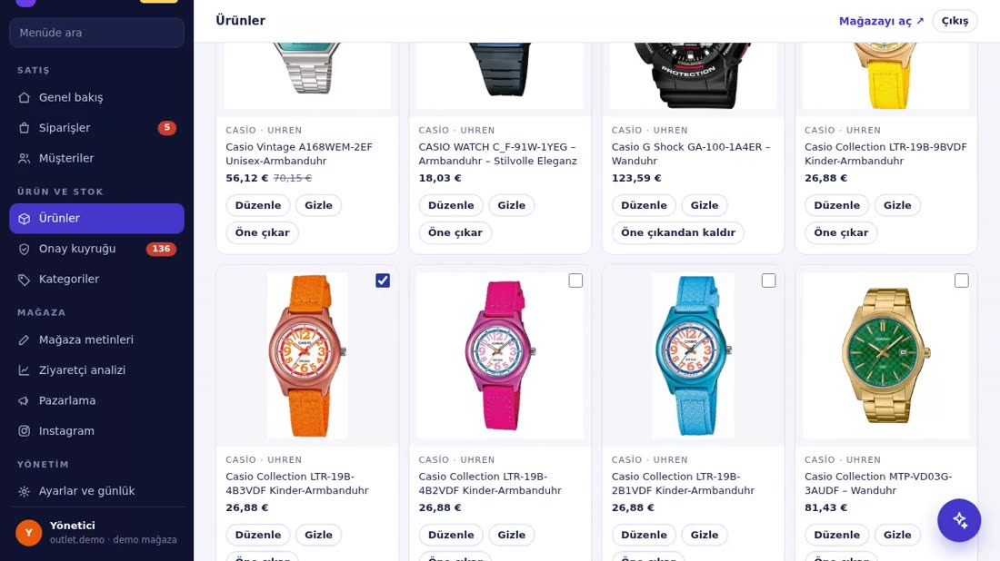
Gizleme ve toplu işlem
- Tek ürün ya da seçilenler birlikte gizlenir, geri gösterilir
- Tek seferde en fazla 20 ürün; her işlem günlüğe yazılır ve geri alınır

Sorunlu ürünler ve onay kuyruğu
- Görsel denetiminde işaretlenen ürünler türüne göre listelenir: kutu, yalnız logo, boş, yanlış görsel
- Yönetici onaylayana kadar mağazada görünmezler
- Filtrelenen ürünler topluca onaylanabilir
Yanıt verdiği sorun: kutu ya da logo fotoğrafıyla satışa çıkan ürünler.

İçerik ve kategoriler
- Ana sayfa başlığı, alt metni ve duyuru şeridi panelden yazılır
- Kategori adları değiştirilir, kategori gizlenir
- Ücretsiz kargo eşiği ayarlanır

Veriden kampanya önerileri
- En çok bakılan kategori ve markalardan, en yüksek indirimli ürünlerden öneri üretir
- Her önerinin dayandığı veri yazılıdır
- Tek tıkla vitrine yansır, tek tıkla geri alınır
Ziyaretçi verisi azsa panel bunu söyler; sayı uydurmaz.
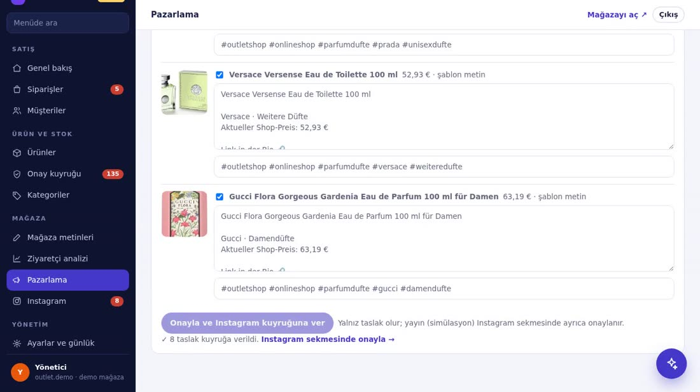
Instagram içerik hattı
- Katalogdan ürün seç; Almanca açıklama ve etiketler hazırlanır
- Panelde önizle, düzenle, onayla, kuyruğa ver
Şu an simülasyon modunda: gerçek hesaba bağlı değil, hiçbir şey yayınlanmaz.
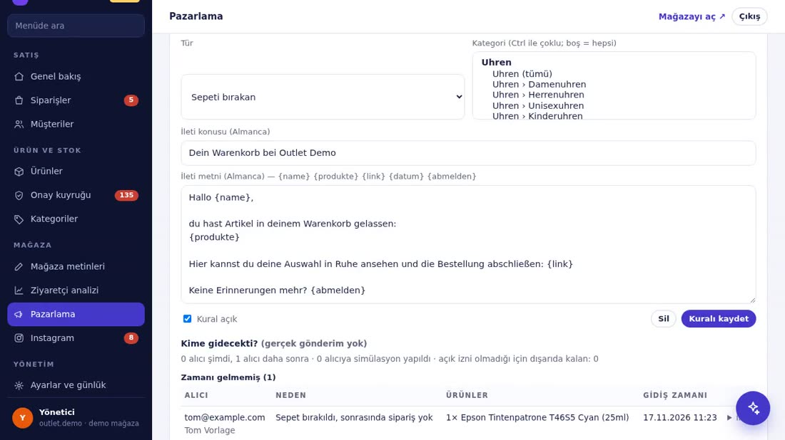
Sepet ve yeniden sipariş hatırlatması
- Kural: kaç gün sonra, hangi kategori, hangi ileti şablonu
- "Kime gidecekti" önizlemesi
- Toner ve mürekkep gibi sarf ürünleri için yeniden sipariş hatırlatması
Gerçek e-posta gönderilmez; yalnız simülasyon kaydı tutulur.
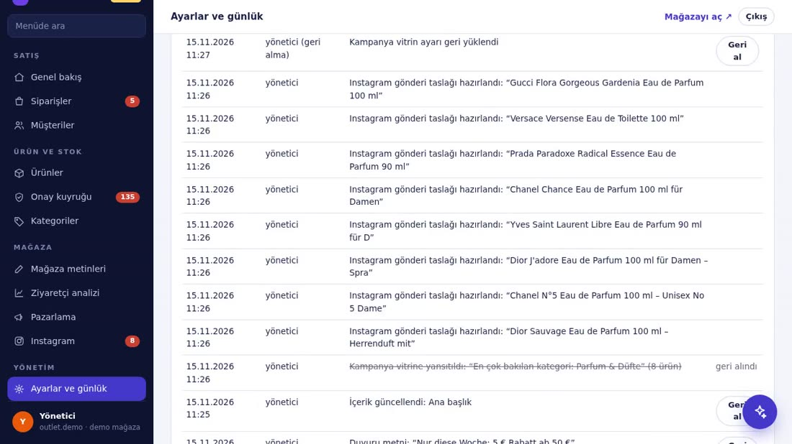
Ayarlar ve değişiklik günlüğü
- Kim, ne zaman, neyi değiştirdi
- Her değişiklik tek tıkla geri alınır
5Asistan
Panelin sağ alt köşesindeki düğmeyle açılır. İki iş yapar: mağaza hakkındaki soruları yanıtlar ve yönetim işlerini sizin yerinize hazırlar.
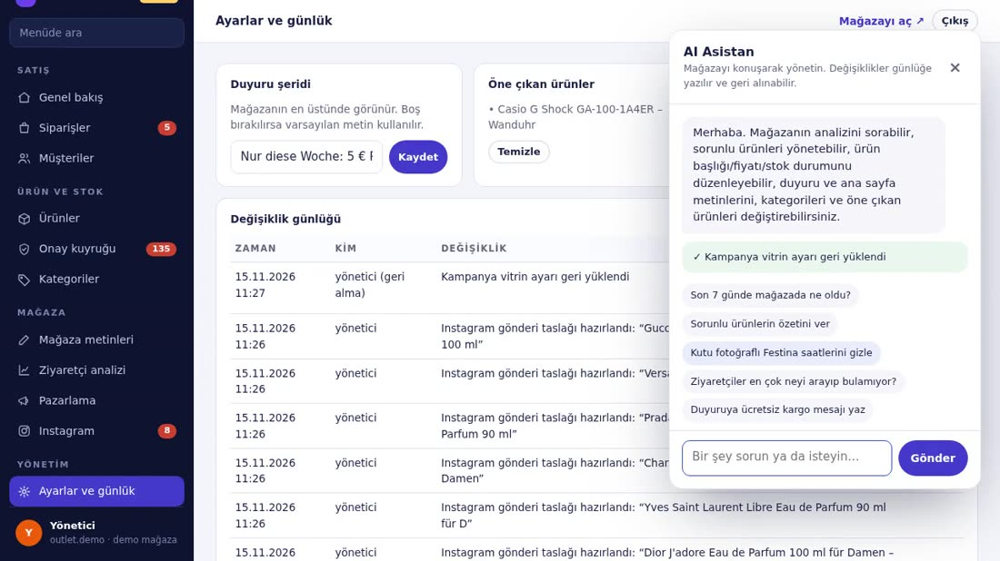
Soru sorarsınız
İş istersiniz
Sınırları
Canlı panelde yapay zekâ anahtarı tanımlı, ancak asistanın canlıda yanıt verdiği henüz denenmedi. Videoda asistanın yanıtı gösterilmiyor; kayıt anahtarsız yerel ortamda alındı.
6Ne hazır, ne değil?
| Parça | Durum | Açıklama |
|---|---|---|
| Mağaza vitrini | Yayında | Arama, filtre, ürün sayfası, favori ve sepet çalışıyor. |
| Katalog | Yayında | 44.998 ürün; fiyat ve stok alındığı andaki hâliyle, güncellenmiyor. |
| Müşteri analizi | Çalışıyor | Tarayıcıda, ziyaretçinin izniyle. |
| Yönetim paneli | Yayında | Yerelde denendi; canlıda giriş yapılarak ayrıca denenmedi. |
| Onay kuyruğu | Yayında | 136 ürün onaya kadar mağazada gizli. |
| Düzeltilen fotoğraflar | Demo için | 661 fotoğraf başka kaynaklardan bulundu; düşük çözünürlüklü, gerçek mağazada satıcının kendi fotoğrafı gerekir. |
| Asistan | Denenmedi | Anahtar tanımlı; canlıda yanıt verdiği doğrulanmadı. |
| Kampanya önerileri | Taslak | Çalışıyor; gerçek ziyaretçi verisi az olduğu için öneriler çoğunlukla katalogdan. |
| Simülasyon | Gerçek bağlantının kodu yazıldı, token olmadığı için hiç çalıştırılmadı. | |
| Hatırlatmalar | Simülasyon | Gerçek e-posta gönderilmiyor. |
| Sipariş ve ödeme | Yok | Kasa adımı yalnız deneme siparişi oluşturur. |
| Kendi alan adı | Yok | Site geçici bir adreste; Chrome güvenlik uyarısı gösterebilir. |
| Ürün fotoğraflarının yedeği | Yok | Fotoğrafların çoğu hâlâ eski mağazanın sunucusundan geliyor; orası kapanırsa görünmezler. |
7Sıradaki adımlar
Bizden
- Ürün fotoğraflarını kendi sunucumuza yedeklemek
- Asistanı ve paneli canlıda uçtan uca denemek
- Instagram bağlantısını gerçek hesapla denemek
- Toner ve mürekkep için "yazıcı modeline göre bul"
- Gerçek ödeme adımı: misafir ödeme, kart, PayPal
Sizden
- Kendi alan adı ve mağazanın kalıcı adı
- Onay kuyruğundaki 136 ürün için karar
- Instagram hesabı ve Meta uygulaması erişimi
- Hatırlatma e-postaları için gönderici ve izin metni
- Güncel fiyat ve stok kaynağı
8Videolar
İkisi de Türkçe seslendirilmiştir.
Tanıtım · 2 dk 29 sn
Panel kullanımı · 3 dk 51 sn
Ses bilgisayarda üretilmiş sentetik bir sestir. Kayıtlar yerel deneme ortamından alındı; paneldeki siparişler ve ziyaretçi verileri örnektir.